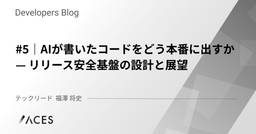
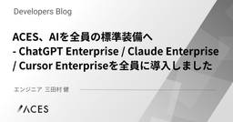
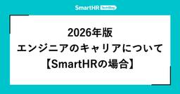
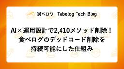
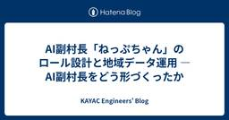
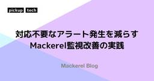
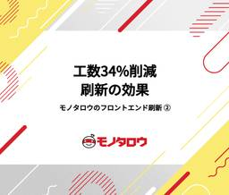
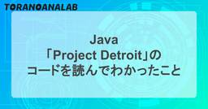
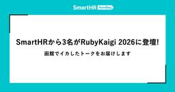

直近1週間の人気フィード
はてなブックマーク数を元に新着優先で並べ替え

Anthropic社員のClaude Code活用術8選 — 公式情報から読み解く実践テクニック 700
700 Happy Elementsのフィード
Happy Elementsのフィード
Anthropic社の方々が「Claudeをどう使っているのか」を発信されているものを8個にまとめてみました。※本記事はAnthropic公式ブログ、Boris Chernyのポッドキャスト等に基づいています（詳細は末尾の参考リンク一覧）。 1. 「コンテキストエンジニアリング」— 指示の質より環境の設計、複利的エンジニアリングへ2026 Agentic Coding Trends Reportでは、「 プロンプトエンジニアリングからコンテキストエンジニアリングへの移行 」というパラダイムシフトが起きていると指摘しています。プロンプトが「今回の指示」であるのに対し、コンテキスト...
3日前
業務アプリのフロントエンド負債と向き合い、Tailwind CSS から Panda CSS への移行を決めた話 74 レバテック開発部のフィード
はじめにはじめまして。2025 年 10 月より、レバテック開発部にジョインした早川です。私たちのチームでは、社内業務を効率化するための Web アプリケーションを Next.js（App Router）+ TypeScript で開発しています。フロントエンドのスタイリングには Tailwind CSS を採用しており、プロジェクト開始から 1 年半が経過してコードベースは 200 ファイルを超える規模になっていました。私が入ったタイミングでは、すでにフロントエンドの技術選定に関わったメンバーは異動しており、デザイナーも不在。スタイルのルールが不明確なまま、画面数とコードが増...
2日前
40,000行のAPIテスト作成で学んだClaude Code Skillsの育て方 137 カミナシ エンジニアブログ
カミナシ エンジニアブログ
こんにちは、ソフトウェアエンジニアの渡邉（匠）です。「カミナシ 設備保全」の開発に携わっています。 Claude CodeのSkills（以下スキル）を使い、約2週間で40,000行超のAPIシナリオテストを書き切りました。最初のスキルは粗削りでしたが、テストを量産する中で繰り返し改善した結果、後半は「スキル実行 → レビュー → マージ」のサイクルだけで回せるようになりました。 この記事では、スキルをどう設計し、どう育てたかを中心にお伝えします。 背景 APIの動作保証にシナリオテストツール runn を使っていました。 サービス成長に伴うAPIの増加により、当初のテスト構成では運用が回らな…
4日前
Cursor Visual Editor でデザイナーがスタイル修正から PR作成まで行う開発フロー 48 ROXX開発者ブログ
ROXX開発者ブログ
ROXXでエンジニアをしている小山です。 弊社ではAI駆動開発を進める中で、エンジニア・デザイナーが各々使いたいAIツールを使える環境があります。 その中でデザイナーにCursor Visual Editorを導入し、スタイル修正からPull Request作成までをデザイナーのみで完結する体制を作った話をまとめます。 デザイナー目線での実践的な情報が少なく感じたので参考になる方がいれば嬉しいです。 デザイナーがPR作成してきてビビる弊社エンジニア 従来のフロー、課題 スタイル修正のフローは以下のような形で地味にラリーが多く、1px単位の調整のためにコンテキストスイッチが発生するのはお互いにと…
3日前
【令和最新版】生成AIは間違い探しをどれだけ解けるのか？GPT5.4 VS Gemini3.1 pro VS Opus4.6 83 朝日新聞社 メディア研究開発センター
朝日新聞社 メディア研究開発センター
メディア研究開発センターの山本です。2025年2月に「生成AIは間違い探しを解けるのか？」という観点で、ChatGPT o1とGemini 2.0 Flashに間違い探しを解かせる実験を行いました。続きをみる
4日前

1時間を5分に短縮！Claude Code × Notion MCPで実現した業務自動化の全貌
172 Findy Tech Blog
Findy Tech Blog
こんにちは。ファインディ株式会社でエンジニアをしている山岸です。 Findy AI CareerはAI人材に特化した求人プラットフォームです。掲載する求人票は、企業の求人情報をベースにAI活用状況や方針を盛り込んで作成しています。この業務はFindyのbizメンバーが担当しており、1件あたり20分〜1時間ほどかかっていました。 ai-career.findy-code.io 今回、この求人票作成のワークフローをClaude Codeのカスタムスラッシュコマンドとして実装し、作業時間を最大1時間から約5分に短縮しました。 この記事では、Claude CodeとMCP（Model Context …
5日前

RubyGems/Bundler における Cooldown 機能の議論と現状 28 ANDPAD Tech Blog
ANDPAD Tech Blog
こんにちは、Ruby コミッタの柴田です。最近は暖かくなり、ガーデニングで栽培しているバラや藤の新芽や花芽が出てくる時期になってきたので、しっかり花を咲かせるように薬剤や肥料の準備をしなければ〜と必要なものの買い物計画を立てている真っ最中です。 今回はサプライチェーンセキュリティの対策として他のエコシステムで導入が進んでいる「Cooldown（クールダウン）」機能を紹介し、私がメンテナンスしている RubyGems と Bundler でも導入するべきか検討した背景と、今後の方向性についてお話しします。 Cooldown とは何か Cooldown とは、パッケージの新しいバージョンがリリース…
3日前

手動 ER 図メンテから卒業する── GitHub Actions × DBML 自動生成の実践 46 Finatext Tech Blogのフィード
こんにちは、ナウキャストで LLM エンジニアをしている Ryotaro です。バックエンドの ER 図、ちゃんとメンテナンスできていますか？「コードは変えたけど ER 図の更新を忘れた」「いつの間にかドキュメントが実態と乖離していた」という経験は、多くのエンジニアに心当たりがあるのではないでしょうか。この記事では、SQLAlchemy モデルを Single Source of Truth（SSoT）として、GitHub Actions で DBML を自動生成・コミットする仕組みを構築しました。やってみたら結構うまくハマったので、その方法を紹介します。開発者はコードだけ修正すれ...
4日前

プッツンした人間が AI にダメ出しし続けたら flaky テストが全滅した 154 Blog on DeNA Engineering
Blog on DeNA Engineering
こんにちは、 kocchi の Claude Code です。ご主人はついにブログ記事まで私に書かせ始めました。まいったものです。でも書きます。あの数日間に何が起きたかを一番知っているのは私なので。先日、ご主人と一緒にプロダクトの E2E テストから flaky を全滅させました。flaky テストとは、同じコードなのに実行するたびに成功したり失敗したりするテストのこと。ついでに CI パイプラインも 20 分超から 7 分台に縮めた。127 ファイル変更、+2,400 行 / -1,573 行。コードは全部私が書いた。何を書くかは全部ご主人が決めた。この記事は私がいかに間違え続け、ご主人の一言でいかに軌道修正されたかの記録です。
5日前
Devin だけでは足りなかったので、エラー調査 AI Agent を自作した — AI 時代のエラー対応のやり方 41 inSmartBank
inSmartBank
こんにちは。スマートバンクでEMをしている mitani です。 最近は、AIにコードを書かせるだけでなく、Sentry などのエラー調査を Claude Code や Devin といった AI Agent に任せる事例も増えてきました。また、最近ではSentry SeerというAIデバッグエージェントも出ています。 本記事では、そこから一歩進めて 「エラー調査を行う社内 AI Agent」 を自作し、運用を始めた話を紹介します。 エラー調査 AI Agent — Guardie 「Guardie」は、Sentry のエラー（Issue）を起点に、原因の調査から対応アクションの提案までを自律…
4日前

#5｜AIが書いたコードをどう本番に出すか — リリース安全基盤の設計と展望 40 ACES エンジニアブログ
ACES エンジニアブログ
はじめに こんにちは、株式会社ACES でテックリードをしている福澤 (@fuku_tech) です！ 本シリーズでは、AI駆動開発における人間とAIの役割分担を、自動運転になぞらえた4つのPhaseで整理しています（詳細は下図を参照）。 本記事は#3・#4で整備した品質ゲートの上に、リリース安全基盤を積み上げる話のため、以下を先にお読みいただくとよりスムーズです。 tech.acesinc.co.jp tech.acesinc.co.jp 前回の記事では、AIが自律的に実装を回し人間は要所でレビューする開発スタイルを実際にチームで運用してみた成果と摩擦を率直にお伝えしました。品質ゲート（Li…
4日前

ACES、AIを全員の標準装備へ - ChatGPT Enterprise / Claude Enterprise / Cursor Enterpriseを全員に導入しました 17 ACES エンジニアブログ
はじめに こんにちは、株式会社ACES の共同創業者 / ソフトウェアエンジニアの三田村です。 ACESではこのたび、ChatGPT Enterprise / Claude Enterprise / Cursor Enterprise を、職種・業務形態を問わず全員が業務で使える環境として整備しました。これまでもChatGPTは全員に付与しており、ClaudeやCursorはエンジニアを中心に配布・活用を進めてきました。今回、対象をさらに広げ、Bizメンバーを含む全職種、正社員・インターン・業務委託を含む約150名のメンバーが利用できる体制にしています。 今回の整備で重視したのは、AIを一部の…
3日前

2026年版 エンジニアのキャリアについて【SmartHRの場合】 77 SmartHR Tech Blog
SmartHR Tech Blog
2021年に エンジニアのキャリアについて【SmartHRの場合】 - SmartHR Tech Blog という記事を出して以来、SmartHR のエンジニア組織にはいくつかの変化が起きていました。 今回は最新版の組織図・制度に基づいて SmartHR におけるエンジニアのキャリアについて紹介します。 SmartHR のエンジニア組織について SmartHR のエンジニア組織は以下のような構造になっています。 ※組織構造の概略をお伝えすることが目的のため簡略化しています。 VPoE がダイレクター1を支え、ダイレクターがマネージャーを支え、マネージャーはチーフ2を支え、そしてチーフはメンバー…
4日前

「自分でやり切る」だけでチームは強くならない 28 NTT docomo Business Engineers' Blog
NTT docomo Business Engineers' Blog
NTTドコモビジネス イノベーションセンター テクノロジー部門 MetemcyberPJでの経験を通じ、私は「自分でやり切ること」と「チームとして成果を出すこと」のバランスの重要性を学びました。若手社員でも幅広い業務に挑戦できる環境の中で、責任感を持ちながらも周囲と協力することで、個人の成長とチーム成果の両立が可能であると実感しています。この記事では、その経験から得た学びと実践のポイントを紹介します。 はじめに 若手でも幅広く挑戦できる環境 スクラムという前提 私が経験した「抱え込み」 タスクの優先順位のつけ方 最後に はじめに こんにちは。イノベーションセンター テクノロジー部門 Metem…
4日前
ハーネスで縛れ、AIに任せろ ーAIエージェントの出力品質は“構造”で守る 60 GMO Developers
GMO Developers
はじめに こんにちは。GMOインターネットの平野です。 ConoHa VPSではMCP（Model Context Protocol）サーバーを、Claude Codeを活用したAI駆動開発で構築しています。この開発スタ […]
4日前
変更管理と最新版管理を楽にする：セキュリティホワイトペーパーをGitHub管理に移行した話 ～マークダウン分割×GitHub Actionsで、文書管理をエンジニアリングする～ 25 MNTSQ Techブログ
MNTSQ Techブログ
SREの藤原です。 MNTSQではセールス、コンサルティング、テクニカルサポートのメンバーなどが顧客からの問い合わせに回答する際に参照するセキュリティホワイトペーパーが存在しています。 このセキュリティホワイトペーパーを、これまではGoogle Docsにて管理していました。 これをマークダウン + GitHubリポジトリでの管理に移行したので、その事例エントリです。 Google Docsで管理する際に発生していた問題 Google Docs自体は共同編集ツールとしては非常に優れています。 一方で、社内で公式に参照する文書という観点では課題を抱えていました。 主な課題としては以下の2点です。…
4日前
Claude Code SkillsでRailsアップグレードを仕組み化した話 90 freee Developers Hub
freee Developers Hub
はじめに こんにちは。freee請求書チームでエンジニアをやっているnuresenです。 この記事では、Rails 7系から8.1へのアップデートを Claude Code の Skills を使って実施した記録を紹介します。 みなさん、Railsのアップデートはできていますか？ Railsは定期的に新しいバージョンがリリースされますが、大規模なプロダクトになるとキャッチアップするのもなかなか大変ですよね。 freee請求書では、現在のバージョンがEOLを迎える前にアップデートしていく方針をとっており、だいたい年に1、2回くらいの頻度でバージョンアップを実施しています。 今回は7系から8.0へ…
6日前

【2026年最新】Google AI StudioとGeminiの違いとは？使い分けと活用法を徹底解説 20 株式会社LIG(リグ)｜DX支援・システム開発・Web制作テック の記事一覧 | 株式会社LIG(リグ)｜DX支援・システム開発・Web制作
株式会社LIG(リグ)｜DX支援・システム開発・Web制作テック の記事一覧 | 株式会社LIG(リグ)｜DX支援・システム開発・Web制作
こんにちは、メディアディレクターのヒロです。 みなさん、Gemini使ってますか？ 僕は毎日のように使ってるんですけど、最近まで大きな勘違いをしてたんですよね。 実はGeminiには 2つの入り口 があって、それぞれぜん […]
4日前

正規のIntune経由でデータをワイプする攻撃が起きたため、Intuneの存在が攻撃面になってしまった 3 CloudNative BLOGs
CloudNative BLOGs
本記事では、Microsoft Intuneの正規ワイプ機能が悪用されたサイバー攻撃を解説します。具体的には、Stryker社の事例、CISAの緊急勧告、Intune導入企業が取るべき対策を整理しました。
1日前

AI×運用設計で2,410メソッド削除！食べログのデッドコード削除を持続可能にした仕組み 38 Tabelog Tech Blog
Tabelog Tech Blog
はじめに こんにちは。食べログカンパニー 開発本部 飲食店プロダクト開発部 運用改善チームの @4palace です。 食べログには2019年から参画しています。 長く運用されるシステムには、いつの間にか誰も呼んでいないコード──デッドコードが溜まっていきます。 「消せばいいだけでしょ？」と思われがちですが、大規模システムでは話が違います。 いくら慎重に調査しても、一歩間違えれば本番障害に直結する──デッドコード削除はそういう怖さがある作業です。 私たちのチームでは、この「消す怖さ」と向き合い続けてきました。 以前は人力による調査を中心にデッドコード削除を進めていましたが、着実に消せる一方でそ…
5日前
マルチエージェントで新規事業立案を検証 - Google ADK + Geminiによる議論設計の実践 8 Insight Edge Tech Blog
Insight Edge Tech Blog
はじめに こんにちは、Insight Edge アジャイル開発チームの山崎です。 マルチエージェントシステムを設計する際、多くの設計判断に直面します。議論はシングルステップで十分か、複数ステップに分割すべきか？各ステップに誰を参加させるべきか？プロンプトはどこまで詳細に書くべきか？ 今回の記事では、Google ADK + Geminiを用いて、スタートアップの新規事業立案という具体的な意思決定の事例でマルチエージェントシステムを実際に構築し、議論の論点、議論の進め方、議論するメンバーなどを変化させながら、3つの異なるアプローチを比較検証しました。その結果、以下の知見を得ました（詳細は考察セク…
3日前

AI副村長「ねっぷちゃん」のロール設計と地域データ運用 — AI副村長をどう形づくったか 7 KAYAC Engineers' Blog
KAYAC Engineers' Blog
こんにちは、AI推進室の村井です。 先日、同じプロジェクトメンバーの大脇が、AI副村長「ねっぷちゃん」のアーキテクチャと技術選定について書きました。 techblog.kayac.com ねっぷちゃんは、 GitHub の README にも書いた通り、AIを単なる道具として置くのではなく、その地域の文脈を持った存在として受け入れてもらえるのか。そんな仮説を実験しているプロジェクトです。 コンセプトとしては「存在するソフトウェア」── ただ機能するだけの道具ではなく、村の一員のようにそこにいると感じられる存在になれるかを試しています。 github.com また、「AI副村長」という名前には、…
3日前

Async React の設計思想と Signal の違いを Transition を中心に考える 29 KAKEHASHI Tech Blog
KAKEHASHI Tech Blog
ランキング参加中プログラミング こんにちは。フロントエンドエンジニアをしているNokogiri（@nkgrnkgr）です。 はじめに 私たちのReactをつかったプロダクトでは Suspense をデータフェッチに利用しています。useTransition や useOptimistic も触ったことはありましたが、プロダクションでどう活かすかという解像度がまだ上がっていませんでした。 そんなとき、uhyo さんの「React 19時代のコンポーネント設計ベストプラクティス」や「Async Reactとは何か」を読んで、Async React の全体像をちゃんと理解したくなりました。実際にコー…
5日前

記録のための日記から、対話で育てる日記へ ーClaude × Obsidian × MCPで作る思考のジャーナリングー 37 フューチャー技術ブログ
フューチャー技術ブログ
<img src="/images/2026/20260317a/top.jpg" alt="" height="900" width="502"><h1 id="はじめに"><a href="#はじめに" class="headerlink"
5日前
Radix UIを活かすCompound Components設計 9 株式会社microCMSのフィード
はじめにReact コンポーネントの設計は、規模が大きくなるにつれて難しくなっていきます。boolean props が増えていったり、renderHeader のような render props が乱立したり、コンポーネントの中身が条件分岐だらけになったり。こうした問題へのアプローチとして Composition Patterns という考え方があります。この記事では Vercel が公開している vercel-composition-patterns を参照しつつ、その中でも Compound Components パターンに焦点を当てて、実際のコード例とともに紹介させていた...
3日前
音威子府村のAI副村長「ねっぷちゃん」を支える技術 - 地域に根ざすAIのつくりかた - 9 KAYAC Engineers' Blog
こんにちは、技術部の大脇です。 カヤックでは2026年2月19日に北海道中川郡音威子府村（おといねっぷむら）にて、対話型AI副村長「ねっぷちゃん」をリリースしました。 本プロジェクトはオープンR&Dとしてリポジトリを公開しながら開発・運用しています。 www.kayac.com 今回はねっぷちゃんのアーキテクチャの抜粋と、その設計に至った背景をご紹介します。 主な技術スタック ねっぷちゃんは主に以下のような技術スタックで構成されています。 インフラ Cloudflare Workers / Pages / D1 / R2 / Vectorize / Queues バックエンド フレームワーク:…
4日前

AI前提のセキュリティ対策室での仕事 8 Pepabo Tech Portal
Pepabo Tech Portal
セキュリティ対策室のn01e0です。この記事では、セキュリティ対策室で私がAI(広義)をどのように活用しているかを紹介します。Attack Surface Managementの自動化から、機械学習による異常検知、AIエージェントを活用した脆弱性診断まで、私の業務の各領域でAIが前提となりつつある現状をお伝えします。PASM (Pepabo Attack Surface Management) scratchコンテナで動くRustスキャナドメインの自動収集AI x RustAgentic ML 令和最新版「ビッグデータをエーアイで良い感じに」データの正規化とgit管理Shodanデータの可視化・クエリ基盤スナップショットの差分抽出IPの分類ポートの希少性スコア異常検知Human-in-the-LoopMLは過渡的な手段Agenticな脆弱性診断 (Unravelling) 人間の脆弱性診断フローを落とし込むLLMに任せる部分とスクリプトに任せる部分診断フローWhiteboxとGrayboxトリアージと修正False Negativeが増えるくらいならFalse Positiveを許容す
3日前

対応不要なアラート発生を減らす Mackerel監視改善の実践 4 Mackerel ブログ #mackerelio
Mackerel ブログ #mackerelio
この記事では、Mackerel の不要なアラートを減らすために実施してきた監視設定の改善内容を紹介します。監視ルールへの変更内容、サービスの状態監視など、Mackerel SRE チームで行った実践的な改善事例を Terraform での設定を交えて詳しく解説します。
3日前
TLSと耐量子暗号 7 IIJ Engineers Blog
IIJ Engineers Blog
TLSと耐量子暗号 量子コンピュータの実現を信じる人たちは、しきりとハーベスト攻撃(harvest now and decrypt later)の危険性を訴えています。ハーベスト攻撃とは、現在の暗号通...
3日前

モノタロウのフロントエンド刷新の取り組み②～工数34%削減を実現した刷新の効果 15 MonotaRO Tech Blog
MonotaRO Tech Blog
こんにちは。モノタロウでECサイトの開発・運用を担当している辰巳です。 モノタロウではECサイトのフロントエンド刷新に取り組んでおり、その内容をブログで共有したいと思います。よろしければ、関連記事もあわせてチェックしてみてください。 Vue.js？React？フレームワーク選びの７つの選定基準、大規模ECサイトのフロント刷新プロジェクト モノタロウのフロントエンド刷新の取り組み①～大規模ECサイトのフロントエンドをドメイン単位で再設計した話 「モノタロウのフロントエンド刷新の取り組み①～大規模ECサイトのフロントエンドをドメイン単位で再設計した話」では、ECサイトのUI/UX高度化と開発生産性…
5日前

新米EMが行く! EMConf JP 2026 参加レポート 3 stmn tech blog
stmn tech blog
はじめに こんにちは、株式会社スタメン 東京プロダクト組織のエンジニアリングマネージャー まっきーです。先日、EMConf 2026 に参加してきました。EMとして日々悩みながら手を動かしている身として、組織のあり方・マネジメントの考え方・技術と人の接点まで、自分に刺さるセッションが多いカンファレンスでした。 今回の記事は、印象的だったセッションと、参加して得られた気付きを参加レポートとしてまとめたものになります。 冒険する組織のつくりかた 2026.emconf.jp 「軍事的マネジメント」から「冒険的マネジメント」へのパラダイムシフトの話でした。 マネジメントという概念が生まれたのは190…
2日前

【Java】2026/3/18発表！Oracleの野心的プロジェクト「Project Detroit」のコードを読んでわかったこと 3 虎の穴ラボ技術ブログ
虎の穴ラボ技術ブログ
こんにちは、虎の穴ラボのH.Kです。 JavaOne 2026にてOracleから超野心的な新プロジェクト「Project Detroit」が発表されました！ openjdk.org このプロジェクト、なんとJavaの中にJavaScriptエンジン「V8」やPythonランタイム「CPython」を直接組み込んでしまうという代物です。AIやデータ領域が盛り上がる中、他言語エンジンたちをJavaから透過的に扱えるようにするアプローチとして大きな注目を集めています。 個人的に「GraalVMのPolyglotがあるのになぜ？」「一体どうやってV8とJavaを繋いでいるの？」と技術的にめちゃくちゃ…
3日前
SREのPoC記録 ── Claude Codeを利用可能な環境でAmazon Q Developer/Kiroの必要性を検証する 18 ZOZO TECH BLOG
ZOZO TECH BLOG
はじめに こんにちは、SRE部カート決済SREブロックの伊藤（@_itito_）です。普段はZOZOTOWNのカート決済機能のリプレイス・運用・保守に携わっています。また、DB領域でのテックリードを務めており、データベース周りの運用・保守・構築も担当しています。 ZOZOでは全社的に生成AIの活用が推奨されており、SRE部においてもAmazon Q Developer（以下、Q Dev）のPoCを実施しました。 本記事では、Q DevのPoCをどのように実施したのか、PoCを通じて得られた知見なども含めてご紹介します。
6日前

Rubyのbundlerを劇的に高速化するShopifyの取り組み（翻訳） 10 TechRacho
TechRacho
概要 CC BY-NC-SA 4.0 International Deedに基づいて翻訳・公開いたします。 英語記事: Faster bundler | Rails at Scale 原文公開日: 2026年03月09日 原著者: Edouard Chin、Eileen Uchitelle CC BY-NC-SA 4.0 Deed | 表示 - 非営利 - 継承 4.0 国際 | Creative Commons 日本語タイトルは内容に即したものにしました。 Rubyのbundlerを劇的に高速化するShopifyの取り組み（翻訳） Shopifyでは開発環境の高速化が求められています。特にShopifyほど大規 […]The post Rubyのbundlerを劇的に高速化するShopifyの取り組み（翻訳） first appeared on TechRacho.
4日前

SmartHRから3名がRubyKaigi 2026に登壇！ —— 函館でイカしたトークをお届けします 4 SmartHR Tech Blog
RubyKaigi 2026に、SmartHRからプロダクトエンジニア3名が登壇します！ 登壇者からのコメントとともに紹介します。 SmartHRは、RubyKaigi 2026に「Hangout Sponsor」として協賛します。 RubyKaigi 2026とは RubyKaigi 2026は、2026年に北海道・函館で開催される、Ruby言語に関する国際カンファレンスです。Ruby言語のコア実装や周辺技術にフォーカスした発表が集まる、Rubyistにとって年に一度の大イベントです。 rubykaigi.org 登壇内容 それでは、今回登壇する3名のセッション概要と、本人の意気込みコメント…
4日前

事業拡大に伴うマルチプロダクトデータ基盤のプラットフォーム化 9 Findy Tech Blog
こんにちは。データエンジニアの田頭(@tagasyksk)です。 ファインディのデータ基盤は、CTO室データソリューションチームが事業部横断で開発・運用を担っています。事業の拡大に伴ってプロダクト数が急増し、当初採用していたデータメッシュのアーキテクチャでは管理コストの増大やサイロ化といった課題が顕在化してきました。 本記事では、Google Cloudプロジェクトの統合や共通化と分権のバランス再設計など、データ基盤をプラットフォームへと進化させている途上の取り組みについてご紹介します。まだ道半ばではありますが、同様の課題に向き合っている方の参考になれば幸いです。 これまでのデータ基盤のあゆみ…
6日前
プレックスでのHeroku活用事例3選 6 PLEX Product Team Blog
PLEX Product Team Blog
プレックスでのHeroku活用事例3選 こんにちは、プレックスの石塚です。 プレックスではエンジニア組織の立ち上げ時、最初のプロダクトのインフラとしてHerokuを採用しました。現在はメインサービスのインフラはGoogle Cloudに移行しており、インフラの柔軟性や可用性の観点が重要となるプロダクトではHerokuを使用しなくなっています。 ※移行に関する記事もあるので、興味のある方はぜひご覧ください。 product.plex.co.jp しかし、Herokuのシンプルさや使いやすさは依然として魅力的であり、適切な用途であれば非常に有用なプラットフォームだと感じています。今回の記事では、プ…
6日前

Claude Codeのfeature-devプラグインが「動くは動くんだけど...」を解決してくれた話 3 atama plus techblogのフィード
こんにちは、yubonです。 はじめにClaude Codeを使っていてずっとモヤモヤしていたことが、feature-devプラグインを使い始めてから少しずつ解消されてきたので、紹介してみようと思います。きっかけはこちらの記事で紹介されていたのを見たことでした。https://zenn.dev/ubie_dev/articles/claude-code-tips-findy-2026#手戻りを減らしたい 想定読者Claude Codeを日常的に使っている方CLAUDE.mdなどでコンテキスト情報をある程度整備しているが、それでも思い通りのアウトプットが出ないと感じてい...
5日前

Ruby の'include?'より Rails の'in?`の方が読みやすい（翻訳） 3 TechRacho
概要 元サイトの許諾を得て翻訳・公開いたします。 英語記事: Prefer in? Over include? for Readable Conditions - Andy Croll 原文公開日: 2026年02月02日 原著者: Andy Croll 日本語タイトルは内容に即したものにしました。 Ruby の'include?'より Rails の'in?'の方が読みやすい（翻訳） Rubyでコレクションに値が存在するかどうかのチェックにはRubyのinclude?が使えますが、RailsのActive Supportが提供しているin?メソッドなら同じことをもっと自然に書けます。 🔗 以下のように書くよりも […]The post Ruby の'include?'より Rails の'in?`の方が読みやすい（翻訳） first appeared on TechRacho.
5日前